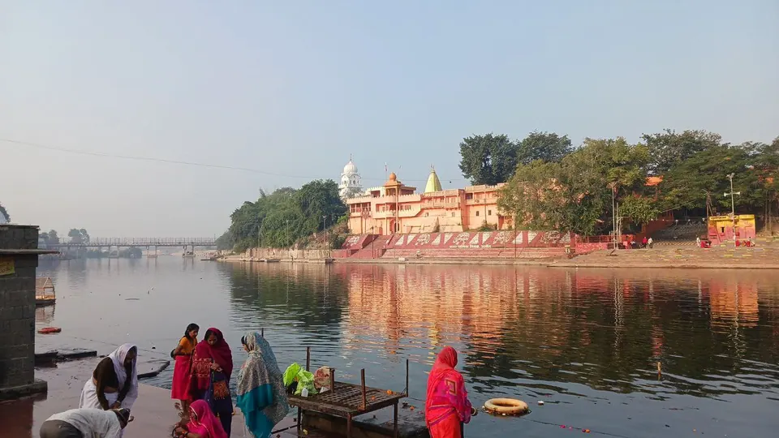

Kartik Purnima Ujjain 2026: Dates, Snan and Festive Details

Kartik Purnima 2026 falls on Tuesday, 24 November. In Ujjain, devotees bathe in the Shipra at Ram Ghat before sunrise and offer lamps (deepdaan) to the river in the evening. The Purnima tithi, per Hindu Tone, runs from 11:42 PM on 23 November to 8:23 PM on 24 November for New Delhi, so Ujjain's minutes will differ slightly.
We have hosted pilgrim families here since 2023, and Kartik Purnima is a day many of them plan around. It is a gentle festival, built around water, light and giving. With a little thought for the early start and the ghat steps, it can be easy even for your parents and children.
Kartik Purnima 2026 at a glance
- Date: Tuesday, 24 November 2026 in India (Hindu Tone, SmartPuja).
- Purnima tithi (New Delhi): 11:42 PM, 23 November to 8:23 PM, 24 November. Because the tithi is running at sunrise on the 24th, the bath, puja and lamps are observed that day.
- Snan: at dawn, in Brahma Muhurta or around sunrise. Hindu Tone gives no clock time, and PanchangBodh lists Delhi sunrise as 6:50 AM; Ujjain's sunrise will be a little different.
- Deepdaan: in the evening, with lamps in ghee or sesame oil.
Panchangs can differ by a day or a few minutes. Please confirm the muhurat with your family pandit ji or a local Ujjain panchang. We will not quote an Ujjain-specific minute that we cannot source.
What Kartik Purnima means
Kartik is regarded as a month of lamps and river bathing, and Purnima, the full-moon day, is its high point. Hindu Tone notes that Vishnu is worshipped with tulsi leaves and Shiva with bilva leaves, water and milk, and that charity such as food, clothes, lamps or grain is part of the day. Many families also keep a light Purnima vrat (fast) and read the Satyanarayan katha.
In Ujjain, where Shiva is the city's lord and Hari-Har Milan is held only days earlier, the day carries a particular warmth. If you are planning the whole festive week, our guide to Ujjain in November 2026: Kartik, Diwali and Hari-Har Milan and the separate Hari-Har Milan guide cover the other dates.
The morning snan at Ram Ghat
Ram Ghat is the main ghat on the Shipra. Past news reports describe how the day usually goes. A Free Press Journal report on 19 November 2021 said a large crowd gathered at the main ghats, with holy dips in the morning and tarpan (offerings to ancestors) on the bank, and that the administration said it had made adequate arrangements. A ZEE5 report also describes large early-morning crowds at Ram Ghat. These are past years, not the 2026 programme.
Water quality: a candid note
A 2023 Free Press Journal report described devotees bathing in contaminated Kshipra water. We cannot say what the river will be like this November. If your parents are unwell or elderly, a few drops of Shipra water on the head, followed by a bath at the villa, is a perfectly accepted alternative. Hindu Tone also says that if you cannot reach a river, a bath at home before sunrise is fine.
Safety on the steps
- Late-November mornings are cool, and the ghat steps can be wet and slippery. Wear slip-resistant footwear and hold elders' arms.
- Carry a dry towel, a shawl and a change of clothes in a small bag.
- Agree on a meeting point in case anyone gets separated in the crowd.
- Keep valuables at the villa. Carry only your phone and a little cash for prasad and lamps.

Evening deepdaan: lighting lamps for the river
Deepdaan is the heart of the day for many families. According to Hindu Tone, lamps are lit in ghee or sesame oil in the evening, on a river or lake (often on small leaf boats), at a temple, beside the Tulsi plant and at the home doorway. Some families light a 365-wick lamp for the year. Its safety advice is simple: never leave lamps burning unattended.
The 2021 Free Press Journal report said hundreds offered deepdaan at Ram Ghat that evening, with thousands of earthen lamps lighting the ghat steps. Our advice is to go in the early evening, before the busiest hour, keep your group small and let children light a lamp at the safe upper steps rather than at the water's edge. Hindu Tone's guide to Karthika Masam in Ujjain (written for 2025) is a useful read on the month's wider pattern.
A calm one-day plan for Kartik Purnima
- Before sunrise: a short visit to Ram Ghat for snan, or a bath at the villa with a little Shipra water. Keep it brief for elders.
- Morning: breakfast and rest. Offer tulsi or bilva leaves as your tradition suggests.
- Late morning or afternoon: Mahakal darshan. Our Mahakaleshwar darshan timings guide explains how the day flows.
- Early evening: deepdaan at Ram Ghat or at a temple of your choice.
- Night: a light satvik meal at the villa and an early sleep.
Combining the day with Mahakal darshan
Hindu Tone's 2025 Ujjain guide notes that the Bhasma Aarti starts about half an hour later in the winter months, around 4:30 AM, and our winter aarti timings post has the latest we have found. Timings are set by the temple, so use the official Shri Mahakaleshwar portal as the final word.
If you want the Bhasma Aarti, do it on a different day from the Purnima snan and deepdaan. A 3:30 AM start followed by a pre-sunrise ghat visit and an evening on your feet is too much for most families. For transport and day trips, see our travel page.
Where to stay near Mahakaleshwar for Kartik Purnima
All five AP Villas are within 2 km of Mahakaleshwar Jyotirlinga, about 6 minutes by car or 12 minutes on foot, with a complimentary Mahakal shuttle for in-house guests (up to 5 guests per trip). Nights around 23 and 24 November are likely to be popular with families, so it helps to ask early.
Rudrangan Suites: a quiet base after the ghat


Rudrangan Suites opened in 2026 with designer finishes and garden seating, which is pleasant for a lamp-lit evening after deepdaan. It has 3 bedrooms and sleeps 6, from ₹5,200 per night. There is a lift and it is wheelchair friendly, which helps with grandparents after an early ghat visit, and pets are welcome. Geysers (hot water) are provided for the cool morning, and the kitchen with induction cooktop, microwave and mini fridge lets you cook a simple satvik meal if you are fasting. Check-in is 10:30 AM and check-out 9:30 AM; a later check-out can be arranged on request, subject to availability.
For bigger groups, consider Divinestay (3 bedrooms, sleeps 8, from ₹5,500 per night, with a private rooftop) or Om Shanti Stay (2 bedrooms, sleeps 6, from ₹4,500 per night). Our caretaker explains the Bhasma Aarti booking process on your arrival evening. See all five on our villas page. Festival dates may have different cancellation terms, which we confirm on WhatsApp.
Practical tips for the day
- Book stay and travel early; we expect more families around 23 to 24 November, but cannot give crowd numbers.
- Keep footwear easy to remove and carry small change for lamps and prasad.
- Buy lamps and leaf boats near the ghat, avoid plastic, and carry your used items back.
- Questions about booking or arrival? See our contact page.
Frequently asked questions
When is Kartik Purnima in Ujjain in 2026?
Kartik Purnima falls on Tuesday, 24 November 2026 in India. For New Delhi, the Purnima tithi runs from 11:42 PM on 23 November to 8:23 PM on 24 November. Exact minutes shift by city, so confirm the muhurat with your pandit ji or a local Ujjain panchang.
Where do people take the Kartik Purnima snan in Ujjain?
Ram Ghat on the Shipra (also spelt Kshipra) is the main bathing ghat, and news reports of past years describe morning dips and evening deepdaan there. Go before sunrise if bathing is part of your vow, with a family member, and keep to the safer, lit steps.
What is deepdaan and how do we do it?
Deepdaan means offering lamps. Families usually light ghee or sesame-oil lamps in the evening, on leaf boats on the river, at a temple, beside the Tulsi plant or at the home doorway. Never leave a lamp burning unattended, and keep children well away from the water edge.
Is the Shipra water safe for a dip?
Not always. A Free Press Journal report from 2023 described devotees bathing in contaminated Kshipra water, so conditions can vary from year to year. If you or your parents prefer, sprinkle a little river water on your head and bathe at the villa instead; that is a recognised alternative.
Can we combine Kartik Purnima with Mahakal darshan?
Yes. Many families do the morning snan, a calm Mahakal darshan and the evening deepdaan. Do not stack all three with a 4 AM Bhasma Aarti on the same day, because it is too much for elders. Check the current aarti timings on the official Shri Mahakaleshwar portal.
Sources
- Hindu Tone: Kartik Purnima 2026, date, snan, deep daan
- SmartPuja: Kartik Purnima 2026
- PanchangBodh: Kartik Purnima
- Free Press Journal: Ujjain devotees take holy dip, deepdaan at Kshipra (2021)
- Free Press Journal: Kartik Purnima, dip in contaminated Kshipra (2023)
- ZEE5: Devotees take holy dips in Kshipra on Kartik Purnima
- Hindu Tone: Karthika Masam in Ujjain (2025)
- Shri Mahakaleshwar temple: official portal
Timings, prices and dates change, especially on festival days. Please verify before you travel with the official temple or government site.
We would be glad to host you for the lamps on the Shipra, and to help your parents with every step before and after.
— Apoorv, Founder, AP Villas & Resorts